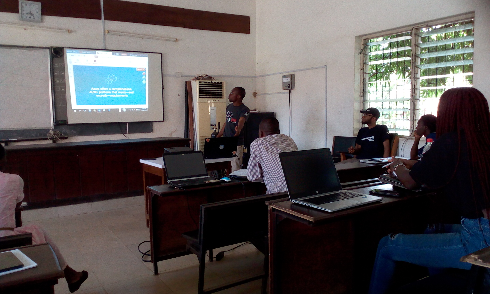
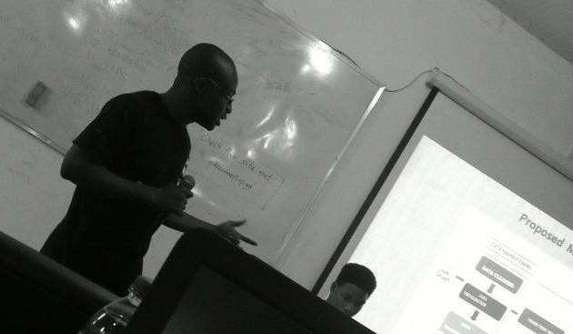
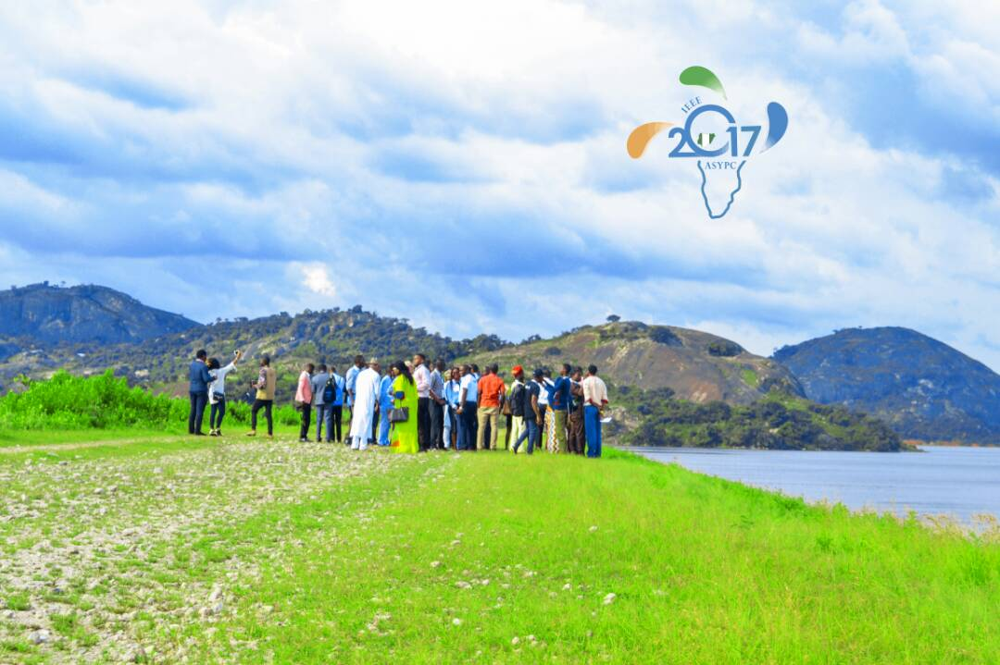
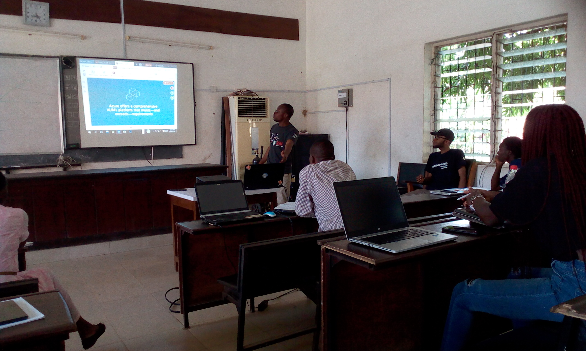
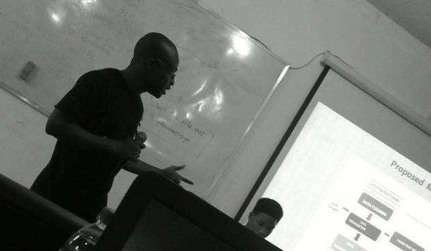
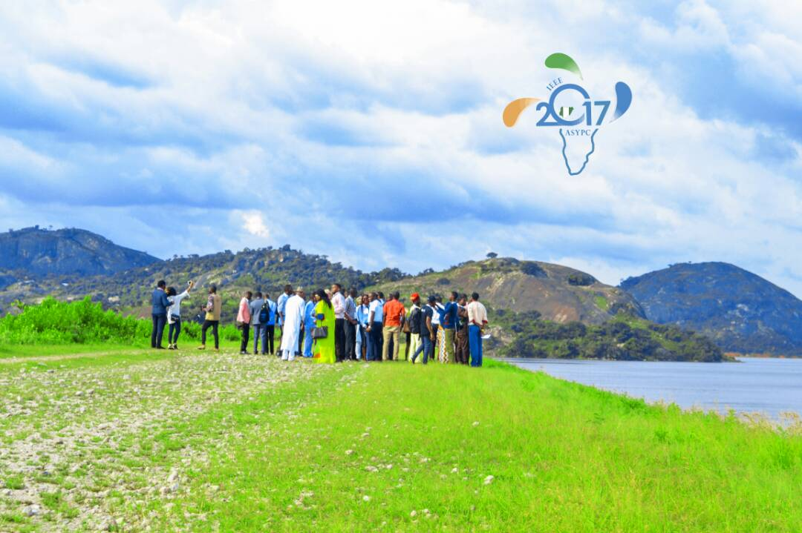

About
My name is Kamorudeen Akindele AMUDA, I earned a Bachelor of Science Education in Computer Science at Adekunle Ajasin University, Master of Science in Computer Science with a specialization in Data Mining and Analytics at the University of Ibadan, Nigeria and also a fellow of Fatima Al-Fitri Predoctoral Fellowship, United State of America. My quest for knowledge in Data Mining, Machine Learning/Deep Learning & Artificial Intelligence started in 2017 when I was opportune to attend Big Data Workshop organised by the Association of Computing Machinery facilitated by Professor Widom of Stanford University. Also, Data Science Nigeria Bootcamps, where facilitators from Ivy league institutions in US and other developed nations practically illustrated and emphasised on Machine Learning and Deep Learning Algorithms. More so, I have participated in various online competition platforms such as Kaggle , Zindi and so on. I am a fancy of Massive Online Course where I enrolled and completed Machine Learning Engineer Nanodegree program on Udacity and other related courses on Udemy, Coursera, DataCamp and Edx. Lastly, I volunteered as a facilitator & technical support engineer at the Machine Learning Group, AI Saturdays Ibadan meetup, University of Ibadan, Nigeria and also co-organised Web and Internet Economics, Neural Information Processing System conferences, University of Ibadan, Nigeria.
Tools & Packages
Resume
Summary
Kamorudeen Amuda
Resourceful, hard-working and reliable IT, Data Analytics and Machine Learning intermediate level professional with over 3 years of experience in using analytical tools and machine learning algorithms to solve problems.
Education
MSc. in Computer Science (Data Mining & Analytics)
2017 - 2019
University of Ibadan, Ibadan, Nigeria.
BSc(Edu.) in Computer Science
2010 - 2014
Adekunle Ajasin University, Akungba-Akoko, Nigeria.
Publications
Kukoyi, S.A, Amuda, K.A, Onifade O.F.W (2021).Voice Information Retrieval In Collaborative Information Seeking (Under review). International Young Scientists Conference in Computer Science.
S.A Ajagbe, K.A Amuda et al (2021): Multi-classification of Alzheimer’s Disease on Magnetic Resonance Images using deep convolutional neural network(DCNN) approaches.International Journal of Advanced Computer Research(IJACR). https://doi.org/10.19101/ijacr.2021.1152001
K.A Amuda & A.B Adeyemo (2020): Analysis of Artificial Neural Network Models in Customers Churn Prediction in Financial Institution (Accepted). Ife Journal of ICT (IJoICT).
K. A Amuda & A.B Adeyemo (2019): Customers Churn Prediction in Financial Institution using Artificial Neural Network. https://arxiv.org/abs/1912.11346
Conferencenes & Workshops
Artificial Intelligence Ideation Workshop Organized by Data Science Nigeria (June 17-19, 2020)
A seminar Organized by Department of Mechanical and Manufacturing Engineering & Laboratory of Bio-composite Technology, Institute of Tropical and Forestry Products, Universiti Putra Malaysia (UMP 2020): Improving academic Writing Skills in High Publishing Impact Journals
International Multi-conference on Application of ICT to Teaching, Research, and Administration, Obafemi Awolowo University, Ile -Ife (Nov.17-20,2019).
Deep Learning IndabaX, University of Lagos, Lagos State (May 11, 2019)
Big Data Summit Organized by Argonne National Laboratory and University of Chicago, University of Ibadan, Ibadan (Nov.13-14,2018)
Artificial Intelligence for Financial Inclusion, Oriental Hotel, Lagos (Oct.10,2018)
Introduction to Bioinformatics (IBT) organized by Pan African Bioinformatics Network for H3ABioNet(Sept. 3- Dec.3, 2018)
Big Data Analytics and Data Mining Techniques Seminar, University of Ibadan (June 13,2018)
West Africa Convergence Conference, Sheraton Hotel, Lagos.(Nov.29,2017)
National Summit on Big Data Economy, Oriental Hotel, Lagos (Oct.12,2017)
Institute of Electrical and Electronics Engineers African Students and Young Professional Conference, Baze University, Abuja (Sept.9-14,2017).
Big Data, Design Thinking and Collaborative Problem – Solving Workshop organized by Association of Computing Machinery (July 10-14,2017).
Achievements
Full Sponsorship by Data Science Nigeria (2019) -- Artificial Intelligence Bootcamp, University of Lagos.
Full Sponsorship by Data Science Nigeria (2018) -- Deep Learning Bootcamp, Lagos
Full Sponsorship by Data Science Nigeria (2017) -- Machine Learning Bootcamp, Lagos
Full Sponsorship by Institute of Electricals and Electronics Engineers (2017) -- African Students and Young Professional Congress, Baze University, Abuja.
Certification
Azure AI Fundamentals -- Microsoft Certified
Short Courses
Machine Learning Engineer Nanodegree, Udacity.
KPMG virtual internship on Data Quality Assessment, Data Insight and Data Presentation.
PowerBI Sales Pipeline Analytics and Visualization, Udemy.
Soft Skills Training, Jobberman.
Guided Tour of Machine Learning in Finance, Coursera.
Introduction to Machine Learning on Azure, Udacity
Introduction to Bioinformatics, H3ABioNet.
Deep Learning in Python, DataCamp.
Introduction to Python, DataCamp.
Statistical thinking in Python, DataCamp.
Machine Learning for Business, DataCamp.
Data Visualization with Python, Edx.
Principle of Machine Learning in Python, Edx.
Work Experience
Machine Learning Intern
August, 2020 - September, 2020
Rural Farmers Hub, Abuja, Nigeria.
- Annotated farmland boundaries through Google Earth on farmland image datasets.
- Researched with a team to develop AI bot that communicated in Hausa (Nigerian dialect) via telephone to the farmers.
Part-time Lecturer
January, 2020 - March, 2020
Mufutau Lanihun College of Education, Ibadan, Oyo State
- Taught students introduction to Basic Programming, Computer Software & Hardware.
- Assistant head of Computer Science Department.
IT Support Officer [Ad-hoc Staff]
Februray, 2019 - April, 2019
Independent National Electoral Commission, Osogbo, Osun State
- Monitored the distribution of election material in real-time.
- Trained the officials on the usage of tracking system.
- Reported the situation room activities to Residential Electoral Commission.
Research Assistant [Under the Supervision of Professor Sesan Adeyemo]
May, 2018 - June, 2019
University of Ibadan, Ibadan, Nigeria
- Conducted literature review for research work
- Coordinated the worksop and seminar.
- Mentored the undergraduate students on their research works.
IT Instructor
August, 2018 - December, 2018
Orolu Community School, Ifon, Osun State
- Improved the teaching methodology via the use of ICT gadgets.
- Taught students web development with the markup languages (HTML & CSS)
Data Science Intern
October, 2017 - Februray, 2018
DataIQ Nigeria, Ibadan,Oyo State
- Performed data pre-processing and exploratory data analysis.
- Adopted machine learning algorithms to solve classification and regression problems
IT Support / Instructor
January, 2016 - March, 2017
Famous Prince International College, Okinni, Osun State
- Delivered teaching students and evaluated their performance via assignments & classwork.
- Tutored students programming language (QBASIC) and organized ICT club.
IT Instructor / Support
November, 2014 - October, 2015
Government Science College, Dutsin-Ma,Katsina State
- Inspired and encouraged academic progression.
- Installed and configured new computer systems in the lab(s).
- Managed computer laboratories.
Graduate Assistant – Under the Supervision of
Dr Abiola Akingbemisilu
April, 2014 - September, 2014
Adekunle Ajasin University, Ondo State
- Graded the student's continuous assessment and computed their results.
- Assisted students with their research projects
IT Support / Instructor Intern
Februray, 2013 - April, 2013
Bethend Model College, Idanre, Ondo State
- Taught students’ mathematics and computer science.
- Organized literary and debate competition for the students.
IT Support / Instructor Intern
Februray, 2012 - April, 2012
Methodist High School, Idanre, Ondo State
- Taught students both practical and theoretical aspects of computer science.
- Managed computer laboratory.
- Officiated the sport activity.
Professional Membership

Institute of Electrical and Electronics Engineers

International Association of Engineers
Internet Society

Association of Computing Machinery
Data Science Nigeria
Black in AI
University of Ibadan R User Group
UIRUG is a dynamic R User group focused on spreading the news of R and the latest development in the technology space to its community.
Event Pictures
 





Recommendations
Kamar is an inquisitive and motivated learner who keeps applying his skills to practical ML problems. He has always approached me with excellent ideas that have never failed to amaze me.

Nikhil Balwani
Data Engineer
Kamorudeen is a hand any growth-thinking company will be happy to have on board. He is a technology enthusiast who is flexible and ever open to new knowledge.
Raheemah Bamidele
Language Expert
Amuda is cool headed and painstakingly studious. He is a great team player also works independently. I won't hesitate to have him in my team
Yussuf Akintola
Energy Law Expert
Kamar, having worked with him on several occasions has demonstrated great team work spirit, attentive nature and life saving suggestions, he has my utmost recommendation.
Abiodun Shomoye
Business Intelligence Developer
Kamar is a dedicated machine learning enthusiast. I have worked with him on projects, his teamwork and communication skills are top-notch.
Bushroh Olaitan
Machine Learning Engineer
Kamar is an IT expert and machine learning enthusiast. In addition to these, He is a man with beautiful heart. I higly encourage you to work with him.
Ali Nawaz
Software Engineer
Kamorudeen is a prolific and academically oriented person. He is a game changer and works with little or no supervision. I won't hestitate to recommend him for any available opportunity at national or international levels.

Adekunle Raji
Hydrometallurgist
Kamorudeen has been a disciplined, hardworking and dedicated young man. He has capacity for persistent and independent research. He is emotionally fit and mentally alert. As far as I can see, he enjoys stable health. I strongly recommend him as a fit and proper person you can work with.